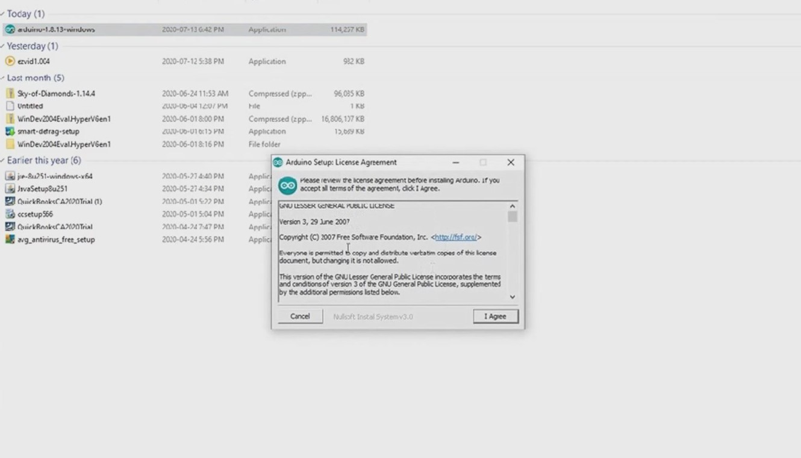
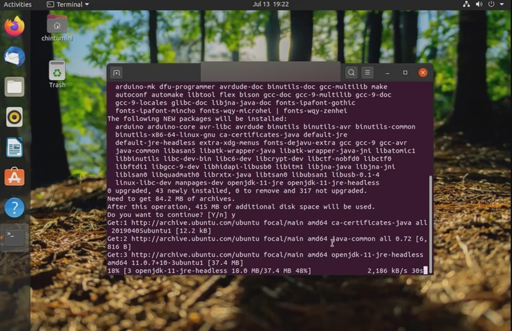

Downloading the Arduino IDE
Downloading Arduino IDE on Windows
- Go on the Arduino Website and click the Windows 7 and newer button
- You can click just download or contribute and download. I have clicked just download.
- Open file explorer
- Double-click the windows installer file
- Follow the instructions on the screen ( for detailed instructions, click here ).
Downloading Arduino IDE on Linux
- Open Linux Terminal
- Type sudo apt-get install arduino into the linux terminal
- Type y when the terminal asks for confirmation
- Wait for the arduino IDE to download
That is how you download the arduino IDE on windows
That is how you download the arduino IDE on Linux